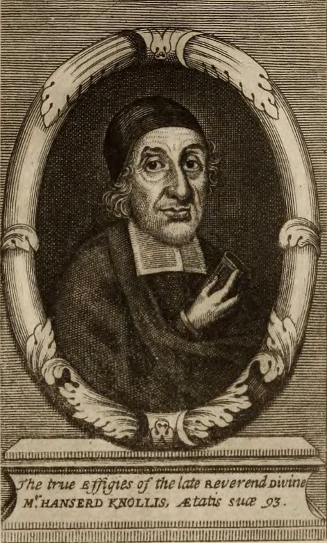

Pilgrim's Progress sits on my desk. I've read a little of Spurgeon's Morning and Evening. The Bible read in cockpits between Iraq missions, on watches, and through the long flights home. And under all of it now, newly under it, honestly, the 1689 London Baptist Confession of Faith. The confessional anchor of U.S.M.C. Ministries. The rule by which I'm learning to read Scripture together with the men I disciple.
Here's the thing: the 1689 is somewhat new to me. I'm Southern Baptist. I go to an SBC church. And like most Southern Baptists, I had basically no idea that the Particular Baptists who first signed the 1689 are part of my own forgotten history, the spiritual grandfathers of the Reformed Baptist tradition the SBC has largely drifted away from over the centuries. So I'm coming to the 1689 the way a lot of guys reading this might: late, curious, and looking for a good resource.
And when I went looking for one, a clean, modern, mobile-friendly way to actually sit down with the 1689 and study it, I came up empty. CCEL has it, but the page looks like 1996 hit it with a hammer and then refused to update. Monergism links out to a dozen places. Reformed.org dumps it as a wall of black text. And the "modernized" versions men actually read, Stan Reeves, Sam Renihan, the Founders edition, are all copyrighted. You can read them online, but you can't host them, can't quote them at length in your own resources, can't build on top of them. The text itself is free; the rendering and the modernized voice belong to other men's publishers.
So I started building what I wished I'd found. usmcmin.org/lbcf.html, free, mobile-first, and authored fresh from the 1677/1689 archaic source, not modernized from somebody else's modernization, but rebuilt straight from the public-domain original. No paywall. No "log in to continue." No 1996 layout. Just the confession the way it was meant to be read, clear, reverent, theologically precise, by men with thirty minutes and a phone.
The men who put their names on it
The 1689 wasn't drafted by committee in a comfortable seminary classroom. It was the work of Particular Baptist pastors who'd been pilloried, jailed, and harassed under both the episcopal and the Presbyterian establishments of 17th-century England. They met privately for years, the formal name on the 1677 first edition was A Confession of Faith. Put forth by the Elders and Brethren of many Congregations of Christians (baptized upon Profession of their Faith) in London and the Country, and only published it openly in 1689 once the Toleration Act made it legal. Three men stand out among the signatories.
c. 1616–1702
London merchant; elder at Devonshire Square; signatory.

1599–1691
Pastor under episcopal and Presbyterian persecution; signatory.
1640–1704
Pilloried for publishing a Baptist catechism; hymn-writer; signatory.
That's the company keeping watch over this project. Their faces help me remember that the 1689 wasn't a draft of theology; it was a witness. Men who put their names on a document the establishment hated. We're not improving on their work, we're putting their work back in the hands of men who couldn't get to it before.
What the reader does
Every chapter at usmcmin.org/lbcf.html is one clean page. The paragraphs are numbered the way the original Particular Baptist signatories numbered them. Every Scripture proof-text in the text is a live link, tap "Romans 8:30" and you're in the MOOP Bible Translation Engine reading the verse. Every theological term, covenant, justification, effectual calling, propitiation, is linked once to its entry in the MOOP Dictionary (first appearance per paragraph; the rest stay plain text, because nobody needs the same word underlined three times in a row). Reading the confession becomes a study, not a recitation. You can stand at the kitchen counter at 5 AM with a phone and your Bible app and actually read the 1689 the way a 17th-century Baptist pastor would have wanted a young man to read it, one paragraph at a time, with Scripture and definitions one tap away.
On the voice
The 1689 in its original English is glorious, but it is not pocket-readable for most men. Words like expressly and unalterably and constructions like "those whom God hath accepted in his Beloved" weren't hard for a Reformation pastor who'd memorized the King James from childhood, but they're a wall for the average disciple-aged man in 2026. So I'm modernizing, gently. Reverent English. Not colloquial. Em-dashes used the way you'd use them in serious prose, sparingly. Lowercase deity pronouns matching the original printing convention.
And I'm modernizing from the original, not paraphrasing somebody else's paraphrase, which is how you end up with copyright trouble. The translation work, like the text itself, is free for any man, any pastor, any home group to copy, quote, and pass around. Every chapter ends with a "Copy text" button that puts the whole chapter on your clipboard for that exact purpose.
What's next
The framework I'm building this with, one clean page per chapter, with Scripture and theology linked right in the text, isn't 1689-specific. It can carry any of the old Reformed texts. The Westminster Confession. The Heidelberg Catechism. The Baptist Catechism of 1693. Bunyan. And eventually, the big one: John Calvin's Institutes of the Christian Religion in the Beveridge translation, also public domain. That's the longer project, a free, mobile-clean Reformed digital library that doesn't exist anywhere else on the open web. The 1689 is the first text. We're shipping more behind it.
If you read it and find something off, a Scripture link that points wrong, a paragraph that reads stiff, a theological term that should be linked but isn't, email me. Or use the connect page for any other way to reach me. This is being built in public, one paragraph at a time, the way the 1689 itself was built, by men who met privately, debated openly, and signed their names to what they were willing to die for.
Perfect Peace,
Portraits of Kiffin, Knollys, and Keach are public-domain engravings courtesy of Wikimedia Commons. The 1677/1689 archaic source text is hosted in full at CCEL. All modernization work on usmcmin.org is yours to copy, quote, and pass around, that's the point.